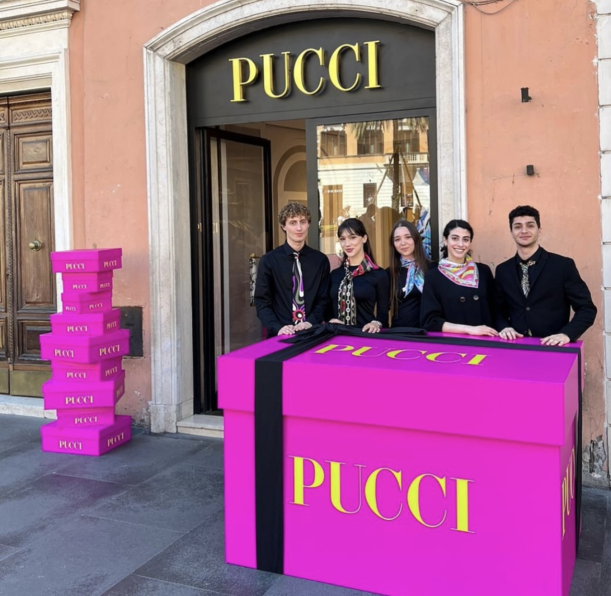
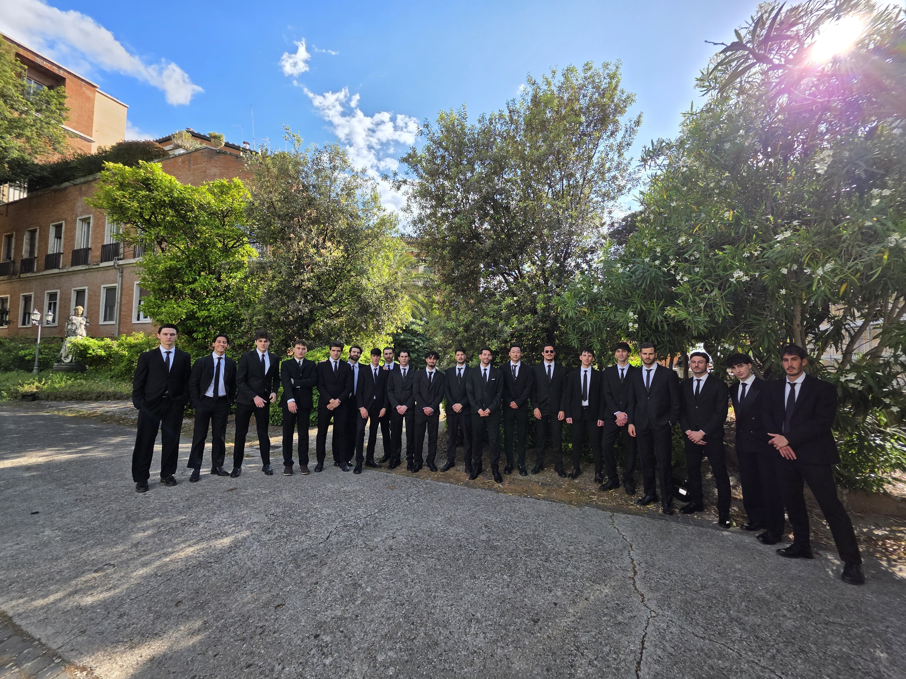
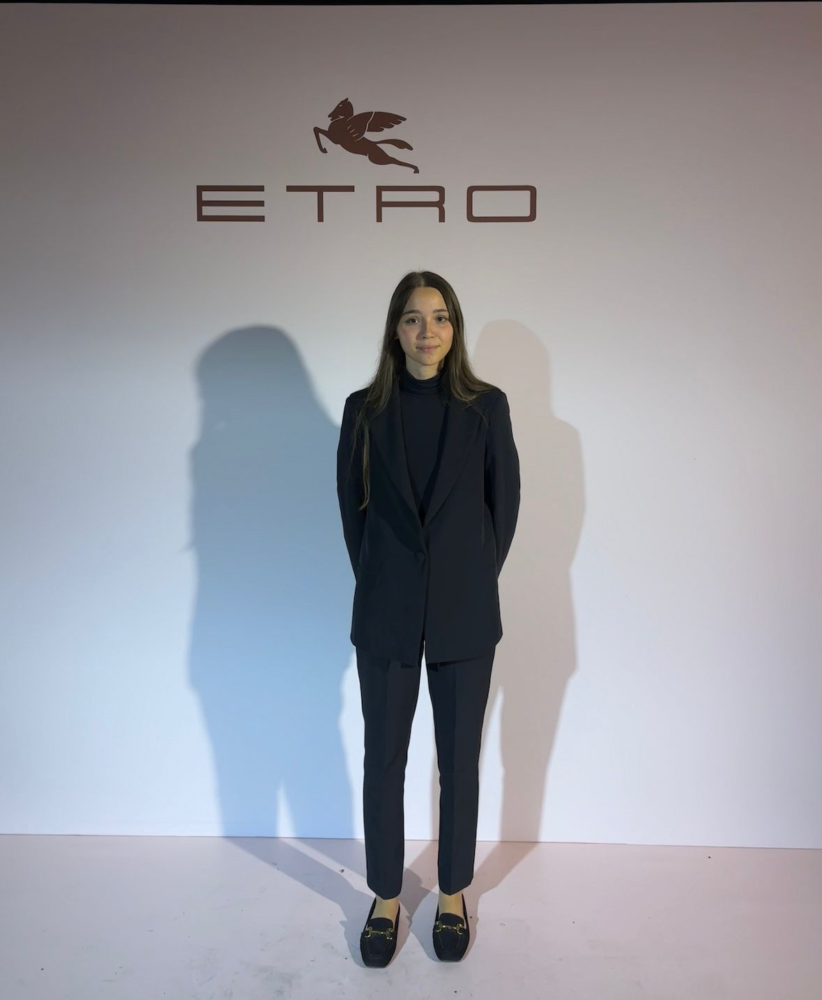
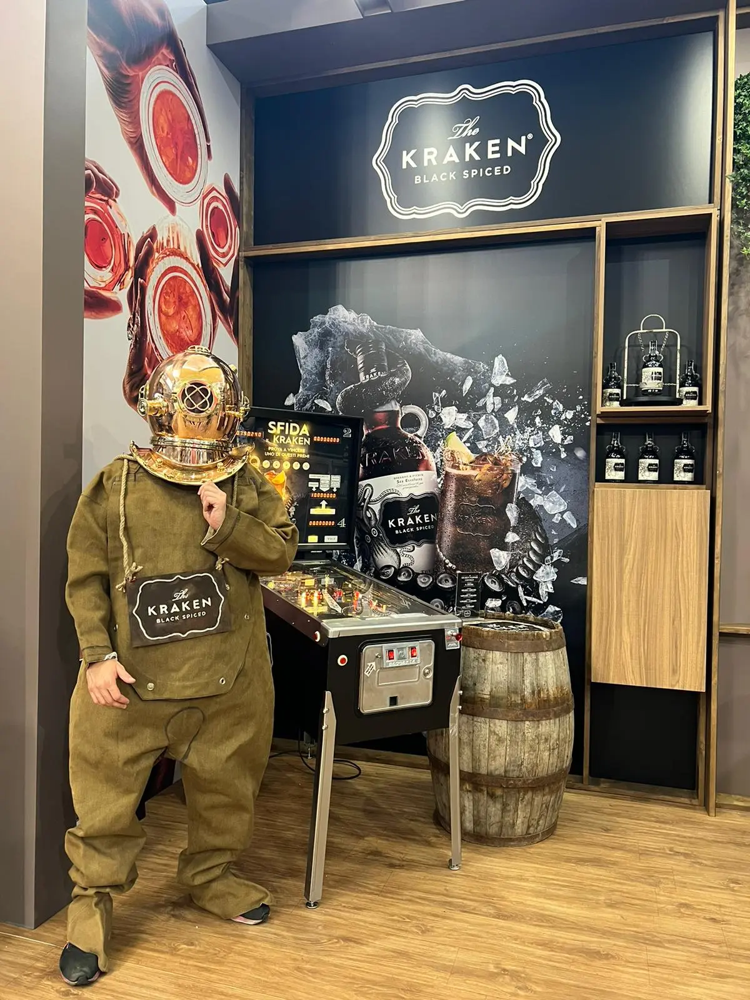

Hostess, steward, promoter e modelle per la Fiera di Roma, La Nuvola, l'Auditorium e le location più esclusive della Capitale.
Preventivo in 24 oreOperiamo come agenzia da 5 anni, forti di oltre 13 anni di mestiere maturati nella produzione di eventi. La rete conta più di 800 professionisti attivi: a Roma copriamo eventi luxury, sfilate, fiere, congressi e attivazioni corporate, dal casting alla supervisione in loco.
Lavoriamo al fianco di brand come Dior, Chanel, Porsche, Sephora, Pirelli ed Etro: la stessa cura maniacale che dedichiamo a un evento di moda internazionale la mettiamo in ogni congresso medico, fiera campionaria o welcome desk aziendale. È questo che ci distingue dalle altre agenzie hostess di Roma.
Che tu debba accogliere duemila delegati a un congresso internazionale o gestire l'immagine di una sfilata, il principio è lo stesso: la persona che accoglie i tuoi ospiti è il primo contatto con il tuo brand.
Accoglienza visitatori, info point, ticketing, gestione stand e assistenza espositori. Operiamo alla Fiera di Roma e nei principali poli espositivi della città.
Registrazione ospiti, gestione accrediti e badge, welcome desk, segreteria congressuale e assistenza in sala. Esperienza specifica in ambito medico e scientifico, inclusi eventi ECM.
Inglese, francese, spagnolo, tedesco, russo, arabo e cinese per convention internazionali, delegazioni estere e summit istituzionali.
Eventi moda, sfilate, shooting, lanci di prodotto, press day e attivazioni luxury. Casting su misura per book, portamento ed esperienza.
Controllo accessi, gestione flussi, assistenza al pubblico, supporto alla sicurezza e presidio varchi per eventi di grandi dimensioni.
Attività promozionali, sampling, degustazioni, store promotion e presidio punti vendita.
Presentazione veicoli, accoglienza in concessionaria, eventi automotive e track day.
Per eventi complessi o multi-giorno, un coordinatore dedicato che gestisce turni, briefing e sostituzioni e resta il tuo unico referente in loco.
Dress code, registro e aspettative cambiano. Selezioniamo il personale di conseguenza.



Ci racconti evento, date, sede, profili e tono. Rispondiamo entro 24 ore con un preventivo dettagliato.
Ti inviamo i profili con foto, lingue ed esperienza. La selezione finale è sempre tua.
Gestiamo contratti, logistica, dress code e briefing pre-evento.
Un referente supervisiona l'evento, gestisce turni e imprevisti.
Il costo dipende dalla durata dell'evento, dal numero di profili, dalle competenze linguistiche e dalla tipologia di servizio richiesta. Inviaci i dettagli del tuo evento e ricevi un preventivo su misura, dettagliato e senza impegno, entro 24 ore.
Hostess e steward di accoglienza, congressuali e immagine, modelle, modelli, promoter, brand ambassador, coordinatori, crew di produzione, fotografi e videografi.
Sì. Selezioniamo personale con inglese, francese, spagnolo, tedesco e altre lingue per congressi internazionali, delegazioni estere e clienti globali.
Per eventi complessi consigliamo qualche settimana di anticipo, ma gestiamo regolarmente richieste last minute grazie alla nostra rete di oltre 800 professionisti attivi.
Certo. Ti inviamo i profili completi con foto e dati: la selezione finale è sempre tua.
Sì, su richiesta gestiamo dress code e uniformi coordinate con l'immagine del tuo brand.
Sì, copriamo eventi sette giorni su sette, inclusi festivi e orari serali.
Sì, è uno dei nostri ambiti di specializzazione. Il personale è formato sulla gestione di accrediti, materiali scientifici e relatori.
Dipende da affluenza, numero di varchi, location e servizi attivi. In fase di briefing ti diamo una stima ragionata, senza gonfiare i numeri. Siamo disponibili anche per un sopralluogo.
Il nostro referente gestisce la sostituzione immediata. La continuità del servizio è una nostra responsabilità, non tua.
Sì. Tutto lo staff è regolarmente contrattualizzato e conforme alle normative vigenti sul lavoro.
Sì. Operiamo in tutta Italia: Milano, Firenze, Venezia, Torino, Bari, Sardegna e le principali sedi fieristiche e congressuali.
Operiamo anche a Milano e in tutta Italia.
Richiedi il preventivo in 24 ore